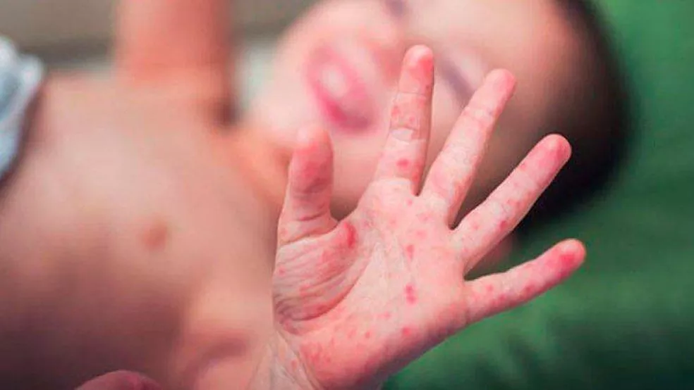
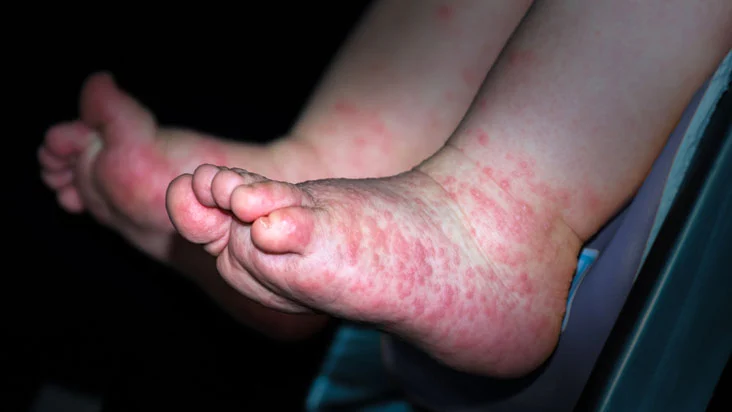
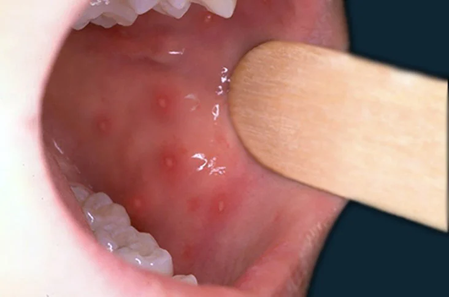

O que é?
A síndrome mão-pé-boca(SMPB) é uma doença causada pelo vírus Coxsackie. É muito contagiosa, ela ataca o aparelho digestivo,
e tem como característica principal, o surgimento de pequenas bolhas no corpo, mais precisamente nas mãos,
pés, e boca, daí o próprio nome da doença. Frequentemente essa doença aparece em crianças menores de cinco anos,
mas pode acometer adultos também. A síndrome mão-pé-boca, dura cerca de uma semana.
Origem e Local
Seus primeiros casos foram descobertos na Nova Zelândia e no Canadá em 1957, entretanto houve poucos casos no mundo.
Desde 1997, é registrado epidemias da doença.
Bandeira da Nova Zelândia
Agente Etiológico
Agente Etiológico - Vírus Coxsackie
O agente mais comum dessa doença é o vírus coxsackie, um tipo de vírus que não é envelopado, ele faz parte da família Picornaviridae,
e ao gênero dos Enterovírus (EV). Mas outros tipos de Enterovírus também podem provocar a doença.
Panorama
Nos últimos 20 anos, foram registrados surtos da SMPB em países do Pacífico Ocidental, como Malásia, Japão, Cingapura, Vietnã e Camboja. Também houve casos na Ásia, América e Europa.
Em 2009 na China, foram registrados 1.115.525 casos da doença, com 1,2% pacientes de forma grave, e 353 óbitos. A maioria das infecções por Enterovírus apresentam um padrão de sazonalidade em países de clima temperado, com predomínio nos meses de verão e outono.
Foram registrados muitos casos em Belo Horizonte, Cuiabá, Mato Grosso, Goiás, Chapecó e Baixada Santista.
De acordo com dados fornecidos pelo Hospital Infantil Sabará, aqui de São Paulo, em 2021, foram diagnosticadas 266 crianças com a síndrome mão-pé-boca. Já em 2020, foram diagnosticados apenas 68 casos. Em Minas Gerais, em 2021, foram ao menos dez surtos por mês no estado e, em 2022, o número já subiu para ao menos 26 surtos por mês até março.
Sintomas
Os principais sintomas dessa doença são:
• Febre alta antes do surgimento das pequenas bolhas;
• Surgimento das bolhas, que são bem parecidas com aftas, na região da boca, faringe e garganta, nas quais podem ser muito dolorosas;
• Por causa das dores, a pessoa pode ter dificuldade em engolir;
• Aparecimento das bolhas nas mãos e nos pés, mas pode ser que apareçam em outras regiões do corpo;
• Mal-estar, falta de apetite, náuseas, vômitos e diarreia;

Mão de uma criança com SMPB

Pé de uma criança com SMPB

Boca de uma criança com SMPB
Transmissão
A transmissão ocorre através do contato com as pessoas, fezes, secreções, alimentos ou objetos infectados. Após a pessoa recuperada,
ainda pode transmitir o vírus pelas fezes durante 1 mês.
Diagnóstico
A doença pode ser detectada por uma consulta no pediatra, devido às características dos sintomas e das lesões (as bolhas). Caso as características se assemelhem a outros quadros de doenças,
o pediatra pode pedir exames de sangue.
Tratamento
Não existe vacinas contra a SMPB, pois ela é autolimitada, ou seja, tem começo, meio e fim, então o tratamento é apenas para aliviar os sintomas. Na maioria dos casos, é utilizado analgésicos e antitérmicos. Em casos graves, é usado medicamentos antivirais.
Em casos raros, a criança pode ser internada, por causa da desidratação, já que tem dificuldade em beber líquidos. O esperado é que o paciente fique em repouso, se alimente bem, se hidrate, independente das dores.
Prevenção
Para se prevenir é preciso tomar todas as medidas de higiene, caprichar na limpeza da casa e reforçar para as crianças o hábito de lavar as mãos. No período que a criança estiver contaminada, não deve frequentar a escola.
Criança higienizando a mão com álcool em gel
Produtos para limpeza de casa
Bibliografia
SCHIAVON, Fabiana. Familia Doença-mão-pé-boca. Saude Abril, 2021. Disponível em:https://saude.abril.com.br/familia/doenca-mao-pe-boca/. Acesso em: 14 agosto.2022.
VARELLA, Dráuzio. Doença-mao-pe-boca. Bvsms Saude, 2018. Disponível:https://bvsms.saude.gov.br/doenca-mao-pe-boca/. Acesso em: 14 agosto.2022.
ARMENDRO, Nathália. Medicos relatam no numero de casos de mao pe boca entre os pequenos entenda doenca. Revista Crescer Globo, 2021. Disponível em:https://revistacrescer.globo.com/Saude/noticia/2021/11/medicos-relatam-aumento-no-numero-de-casos-de-mao-pe-boca-entre-os-pequenos-entenda-doenca.html. Acesso em: 14 agosto.2022.
MENDES, Alessandra et al. Casos-da-sindrome-mao-pe-boca-quase-triplicam-em minas-gerais. Itatiaia, 2022. Disponível em:https://www.itatiaia.com.br/noticia/casos-da-sindrome-mao-pe-boca-quase-triplicam-em-minas-gerais. Acesso em: 14 agosto.2022.
CANTERAS, Carla. Entenda a sindrome mao pe bocaque cresceu com fim do isolamento. Noticias R7, 2021. Disponível em:https://noticias.r7.com/saude/entenda-a-sindrome-mao-pe-boca-que-cresceu-com-fim-do-isolamento-04122021. Acesso em: 14 agosto.2022.
DIAS, Vanessa. monografia files original. Faculdade Facsete, 2021. Disponível em:https://faculdadefacsete.edu.br/monografia/files/original/f3e520c3206850b9073980c18546852c.pdf. Acesso em: 14 agosto.2022.
OLIVEIRA, Vânia et al. DocCliente sindrome mao pe boca. Sbp, 2019. Disponível em:https://www.sbp.com.br/fileadmin/user_upload/_22039d-DocCient_-_Sindrome_Mao-Pe-Boca.pdf.Acesso em: 14 agosto.2022.